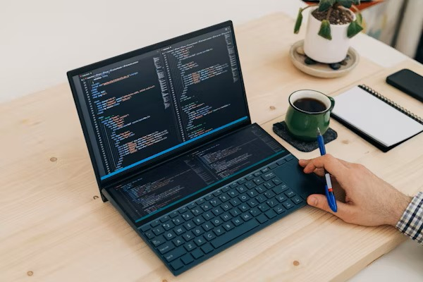

I’m a passionate and detail-oriented web developer with a strong foundation in front-end and back-end technologies. I specialize in building responsive, user-friendly websites and web applications using modern frameworks like React, Node.js, and Express, along with HTML, CSS, and JavaScript.
I’m a passionate and detail-oriented web developer with a strong foundation in front-end and back-end technologies. I specialize in building responsive, user-friendly websites and web applications using modern frameworks like React, Node.js, and Express, along with HTML, CSS, and JavaScript.
I'm a creative and detail-driven web designer with a passion for crafting beautiful, responsive, and user-centric websites. I specialize in designing intuitive layouts that not only look great but also provide a seamless user experience across all devices.
I’m a passionate and detail-oriented web developer with a strong foundation in front-end and back-end technologies. I specialize in building responsive, user-friendly websites and web applications using modern frameworks like React, Node.js, and Express, along with HTML, CSS, and JavaScript.
I’m a creative designer specializing in web and graphic design, with a focus on crafting visually appealing and user-friendly digital experiences. With a strong eye for aesthetics, layout, and typography, I help brands communicate their identity through compelling visuals and functional design.
